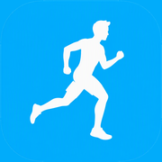

Leuk dat je gebruik wilt maken van deze app en hem wilt testen.
Let op: dit is een eerste versie en er moet nog van alles aangepast worden.
Eerst een sleutel instellen
Voor het plannen van routes heb je eenmalig een gratis sleutel van OpenRouteService nodig.
Versie 0.5
Rondrit vanaf mijn locatie
Opgeslagen routes
Tik op de kaart om punten toe te voegen. Sleep een punt om het te verplaatsen, tik op een punt om het te verwijderen.
Stukkie gebruikt OpenRouteService om routes te berekenen. Daarvoor heb je eenmalig een gratis sleutel nodig: